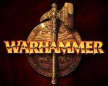
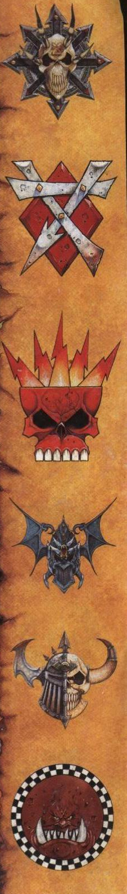

Warhammer fantasy
Warhammer fantasy has a medievil type theme with wizards and dragons, undead army's, knights and so on. In the warhammer fantasy world there are many different army types. The realm of men, Chaos, Elves, Orcs and Goblins, Dwarfs, The Undead, Skaven, Lizardmen, Ogres and Others
Orc's And Goblins
Orc's Orc's Orc's Orc's Orc's Orc's Orc's Orc's Orc's Orc's Orc's Orc's Warhammer Fantasy Battle, a tabletop wargame in the Warhammer setting, now officially called Warhammer, the game of Fantasy Battles
Artwork

Warhammer stories